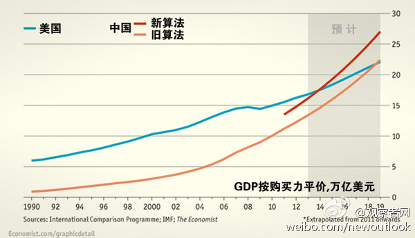

这里可以看到详细的报告：网页链接 报告说世界的物价指数是100的话，美国是129，中国是70，也就是说美国的物价比中国高80%。是根据这个数据计算的购买力平价的GDP。 //@_杨肉_: 这个图是说中国物价比美帝低20%？低能理解但好奇具体怎么算的。。//@斯图亚特9: 前两天《大西洋》专栏说：那又@观察者网:【英媒：中国坚拒“全球最大经济体”头衔 为拒绝闹了一年】世界银行最新报告显示“若按照购买力平价计算，中国或将在今年取代美国，一举成为全球最大经济体。”英国《金融时报》网站5月1日报道称，中国曾努力阻止这份经济报告的起草，“已为此抗争了整整一年”。网页链接 
前两天《大西洋》专栏说：那又怎么样呢？中国的人口是美国的4倍多，只要中国从比美国穷超级多进步到穷很多，GDP就会超过美国。很有道理。另外购买力平价不是个合理计算。按他的算法中国的汽车和衣服一定都比美国便宜。//@Escudo: #未是天#//@LaLuna9: //@松鼠九号: 一定要把人均计算到底！@观察者网:【英媒：中国坚拒“全球最大经济体”头衔 为拒绝闹了一年】世界银行最新报告显示“若按照购买力平价计算，中国或将在今年取代美国，一举成为全球最大经济体。”英国《金融时报》网站5月1日报道称，中国曾努力阻止这份经济报告的起草，“已为此抗争了整整一年”。网页链接